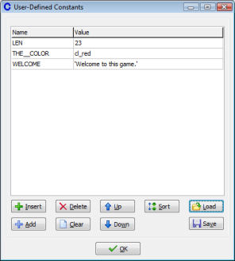

In advanced mode you can define constants that you can use in scripts and in values for actions. Each constant has a name and a value. Names should follow the same rules as variables, that is, they must start with a letter or underscore symbol and further consist of letters, digits or underscore symbols. You are though strongly recommended to make all your constants easily distinguishable. A usual convention is to use only capital letters and underscores.
To define constants you chose Define Constants from the Resources menu. The following form will show (in which already some constants have been defined):

At the top you see the constants. At the left there is the name and at the right the value. You can select the name or value with the mouse and change it by typing. A value of a constant should be a constant expression. That is, it is either a constant number or a string (with quotes around it) or it is an expression. The expression is evaluated before anything else happens in the game. So it for example cannot reference the current room, instances, or scripts. But it can contain the built-in constants and the names of resources.
You can append a constant at the end of the list using the button Add (or by pressing Enter) and delete it using Delete. You can also insert a constant above the current selected constant. There are also buttons to clear all constants, to move them up or down in the list, and to sort them by name.
Finally you can save all constants to a text file or load them from a text file. This is useful when you want to store collections of useful constants for later use. When loading constants they are appended to the current list. The text file can also be editor using a text editor. Each line contains a constant definition of the form NAME=VALUE.
It is good practise to put any value that you use multiple times in a constant. Also, if you are not completely sure about a certain value you better put it in a constant as it is a lot easier to change the constants than to find the values in the scripts and actions and change them there.